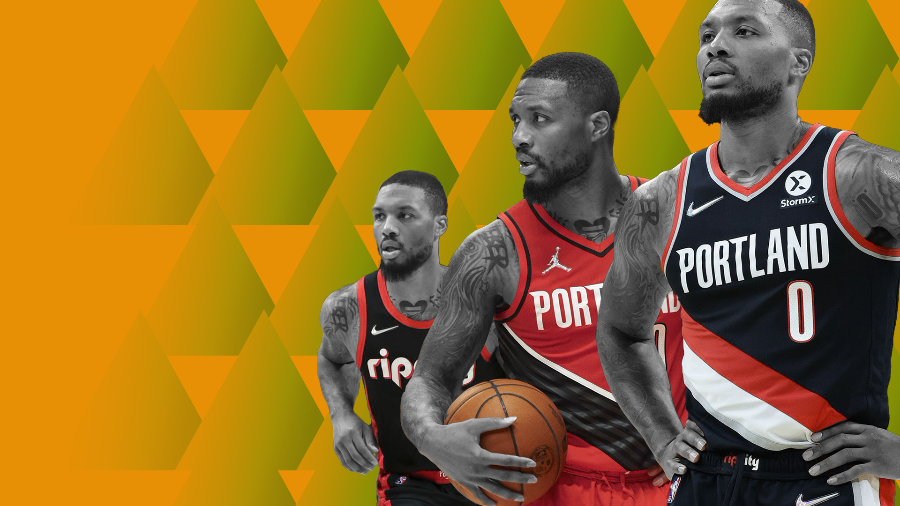

Where do the Trail Blazers go from here?
After selling major pieces and clearing cap space, Portland has a gargantuan task ahead of them.
Sean Carroll illustration
I remember the first time the Portland Trail Blazers decided to retool around Damian Lillard. LaMarcus Aldridge had just left in free agency, joining the San Antonio Spurs, and the front office, led by Neil Olshey, decided to sell everything not bolted to the ground, including Nic Batum, Wesley Matthews and Robin Lopez.
Portland prioritised young talent and brought in prospects like Mason Plumlee, Al-Faruq Aminu and Mo Harkless alongside draftees in CJ McCollum, Myers Leonard and Allen Crabbe.
Dame’s PR team quickly assembled a narrative that Lillard was a young leader, taking the captain role with this young team, hoping to grow slowly. The following season, Dame became an All-NBA level point guard. He upped his points per game average to over 25 and spent a lot more time with the rock in his hands.
Unfortunately for Olshey, Dame’s presence was too much. Instead of bottoming out, tanking without tanking (in a time when the league was making fun of Sam Hinkie), the Blazers won 44 games, only seven fewer than they did the season prior with all the veterans.
Dame proved that he was an elite scorer in the league and CJ would go on to win the league’s Most Improved Player award. The long rebuild had turned into an instant re-tool and the Blazers had to act fast.
A breakout Dame season was great news for a small market team. They had a young superstar and he had committed to the franchise for the long term.
But by being too good, the Blazers were never able to refill the coffers. They weren’t able to replenish the young talent on the roster and throughout this latest era of Portland basketball, nobody took them seriously as title contenders.
Yes, they made the Western Conference Finals, but they lucked out in the playoffs, not having to play the Golden State Warriors or Houston Rockets (the two unquestionable best teams) until the Conference Finals.
I won’t go on about how the Blazers got to where we are today, all we know is that Joe Cronin is trying to re-tool, except unlike the first time, Dame is on the wrong side of 30 and a title run seems even more impossible.
During the first rebuild, Lillard had committed to Portland. He wanted to be the face of the franchise and wanted to bring the team to the promised land. This time, he’s reportedly unhappy with the franchise but doesn’t want to be the one to request a trade.
As my friend and colleague Dante Boffa pointed out on The Deep Two NBA Podcast, it’s just like that season of Peep Show where Mark and Sophie are about to get married but neither wants to be the first to break it up. Gem of a call.
In an attempt to re-tool, Portland traded away Norman Powell, Robert Covington, CJ McCollum and Larry Nance Jr.
The combined return from those trades was Eric Bledsoe, Joe Ingles, Justise Winslow, Keon Johnson, Josh Hart and a 2022 first-round pick via New Orleans.
Ingles’ deal expires at the end of the season and Bledsoe only has $3.9 million on the books for next season if they waive him, so let’s assume that they’re both gone by next season.
In terms of retooling, the Blazers have Dame, Hart, their own first-round pick, the Pelicans’ (if it falls between 5-14 in this year’s draft) and key free agents in Jusuf Nurkic and Anfernee Simons.
Simons has been a lone bright spot for this roster, using his increased role and starting spot to average 16.4 points and 3.8 assists while making 40 percent of his 7.4 three-point attempts.
The Powell/Covington deal with the Clippers was to prioritise “cap flexibility” and “create a runway” to re-sign Simons. It’s a heartwarming story about a guy who came in with high expectations and after four years of sitting on the bench, finally capitalises on the opportunity.
It’s not all sunshine and rainbows though. Simons fades between disinterest and incompetence on defence, like he always has, and at 6’3”, surely Cronin understands that a Dame-Simons backcourt has similar defensive questions to a Dame-CJ backcourt.
But he’s a restricted free agent, you have to re-sign him… if you lose him in free agency, you lose him for nothing. It’s a rock and a hard place.
Since Portland isn’t winning games and Lillard is sitting out for the rest of the season with an abdominal injury, they’ll likely retain their draft pick (lottery protected to Chicago as part of the Derrick Jones Jr. trade) and if New Orleans loses in the play-in, Portland will have two lottery tickets in the 2022 draft.
They could use these to trade for a win-now player or draft a couple of rookies and hope that they’re good today. Golden State drafted seventh and 14th in the most recent draft and while Jonathan Kuminga and Moses Moody look great on a random Tuesday game against the LA Clippers, who knows what value they’ll add in the playoffs.
The final avenue to retool is in free agency. A bunch of generic Twitter handles wet their pants when they imagined how much free money the Blazers can throw around this offseason but in reality, it’s not that much.
Assuming the Blazers use their two picks to draft players, guarantee Josh Hart’s deal, which of course they would, and re-sign Simons and Nurk, Portland will have around $10 million in cap space, plus their mid-level exception.
(Side note: I’ve pencilled in approximately $15 million per season for Simons. Something like four years, $60 million. Would I pay it? Probably not. Should Portland? Rock and a hard place, I’ll get to that later).
The starting lineup would look something like this:
-
PG: Damian Lillard
-
SG: Josh Hart
-
SF: Kyle Anderson (potential free agent forward who would be available for their cap space)
-
PF: Nas Little
-
C: Jusuf Nurkic
-
6th: Anfernee Simons
That’s fucking grim.
So then you ask yourself, why do they have to re-sign Nurk and Simons? Well, who else are they getting? Portland hasn’t been a free agency destination in the past and with Lillard trade rumours constantly swirling around this team, why would a free agent tie their success to a player that might jet midseason?
The only way Cronin can really make a difference is on the trade market. This is where the real retooling happens. The Trail Blazers can package their two (potential) lottery picks, Keon Johnson (first-round pick in 2021) and salary to find a legitimate contributor for their push.
That package doesn’t net you a superstar but two first-rounders is the kind of price it costs for a solid starter like Myles Turner, Jerami Grant or John Collins.
That’s a little bit sexier. I wouldn’t pick them to come out of the West, but I’ll be tuning in to see if they overperform a little bit, play above their heads.
Does that aforementioned lineup plus a Jerami Grant type win anything significant? Does it beat the Warriors, Suns, Grizzlies, Jazz, Nuggets, Clippers or Mavericks? Maybe one or two.
And that’s the rock and a hard place situation Portland finds itself in. Much like 127 Hours, the 2010 film where a mountain-climbing James Franco falls into a crack, jamming his arm between a boulder face and large rock.
Portland faces a difficult decision this offseason; do they stay where they are, re-tool around Dame and never win a title? Or do they cut their arm off, trade Dame, and start the arduous process of rebuilding slowly?
If James Franco cuts his arm off, he could climb out of the hole, find some water, look for help and get back to his normal life. He wouldn’t have an arm but in his case, he’d live. It’d be tricky, but he’d live.
If he stays in the hole, there’s a non-zero percent chance that help comes, someone else moves the boulder and he can leave relatively unscathed. The Blazers might make the greatest trade of all time, Dame could be back to his old self and their free agent signings fit perfectly. It’s unlikely, but not impossible.
What are the odds Joe Cronin, an unproven general manager fighting for his job, finds hidden gems on the free agency market and trades for a second star to pair with Dame? Unlikely, but not impossible.
Using a makeshift tourniquet and a blunt knife, James Franco breaks his arm and climbs out of the depths. He finds help, recovers and life goes on. Should Portland do the same?